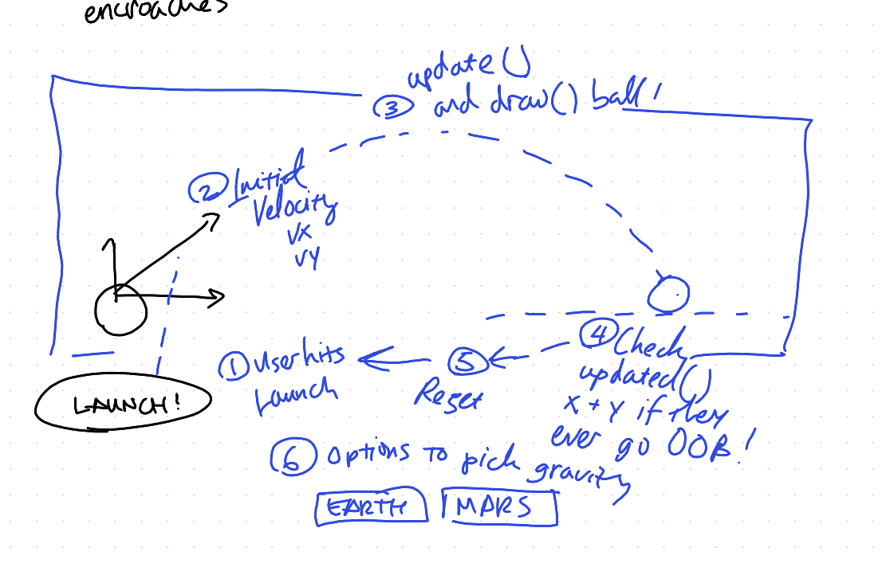
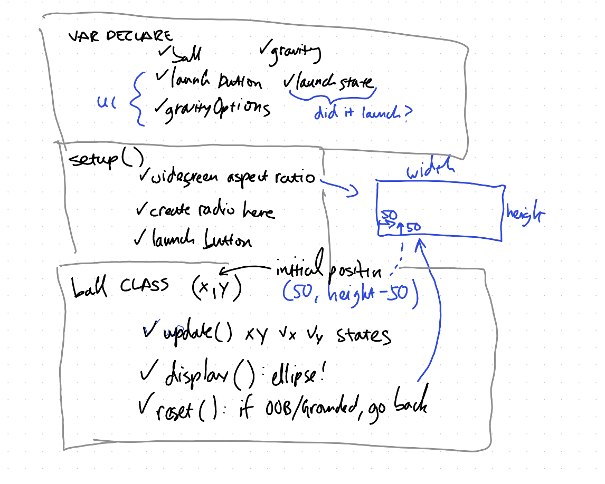
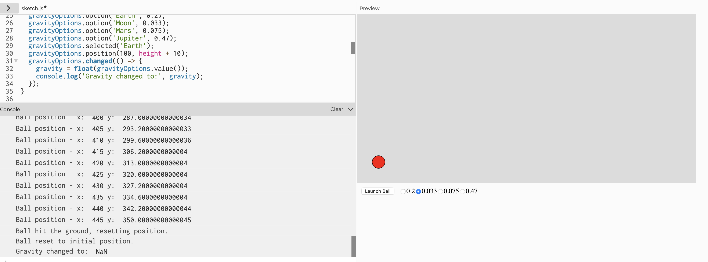

Mikey R | GIXD-503A W11 | 11/26/24
*Ensure browser window adequately sees entire canvas*
Let's observe the force of gravity and how it can affect an object's ballistic trajectory. An interesting interactive element is for the user to switch the gravity setting based on different gravitational constants. This can give users a good appreciation of how different planet's gravity compares to what we experience on Earth!
Draw this trajectory visualizer! We'll start the object on the left and when user hits "Launch" instant velocity is applied in the x and y direction.
Let's also perform a check when the object hits the "ground level" as well as account for possibility of object going out of canvas bounds. Further, let's also add the ability for the user to select types of gravity so they can observe the differences here. Radio button UI seems to be most appropriate!
We'll pick 1 "lighter" and 1 "heavy" planet, Mars and Jupiter. Looking up the gravitational constants for both and comparing to Earth's 9.81 m/s^2, the proportional differences are 0.38 and 2.53 respectively. This means that an object weights 2.53x in Jupiter (neglecting buoyancy effects due to being a gaseous planet.)
By looking up these gravitational constants and determinging the proportions relative to Earth, this gives users a good sense of scale/difference when launching the object! This adds a lot of realism and connection to this mini physics lesson!
Like previous projects, I don't like coding straight away but really taking the time to architect how the code will shape up! Based on the sketch, the star of the show class, "Ball" will need a function that updates the position and velocity as well as a display() function to draw the object over time!
In earlier iterations, when I clicked on my radio button to switch grav constants, the ball disappears! I instantly created console log tappoints to investigate... for some reason the gravity being reported out was NaN! From past coding experiences, NaN is always a bad omen and I suspect that's what causes the ball display() to not render because NaN ruins the position! Luckily, I realized my mistake - the radio button documentation states that the "label" that will display is supposed to be the 2nd parameter in the input syntax.
Another hurdle I was encountering was making sure my boundary checker if statement was working - as seen in the image above, I also console-logged the Ball's x and y position throughout the trajectory! By reporting it out in pixel-space this also helped me "size-up" my default Canvas size to account for the Mars case which is the case that causes the Ball to travel furthest in the x and y direction!
Overall, this was a cool activity to create a way to appreciate how ballistic trajectories drastically change based on a planet's gravitational constant!